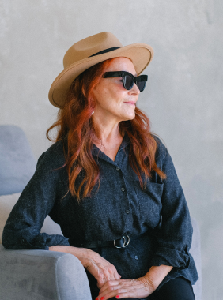
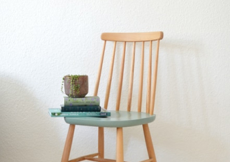

Заголовок h3
Один из самых важных навыков, которые может дать работа с психотерапевтом
- умение в разных ситуациях по-разному обходиться со своими эмоциями.
Снять этот процесс с автопилота и перевести его в поле сознания.
Давайте, к примеру, разберем тревогу. Можно разложить перед собой целую
коллекцию доступных реакций и выбрать нужную:
Мы знаем, что нуждаться в помощи и поддержке в трудные периоды жизни
абсолютно нормально для любого человека, и стремимся сделать психотерапию
безопасной, удобной и доступной каждому
Ана Крымская
Что еще можно делать с тревогой?
- Управлять ей через что-то внешнее: включать музыку,
которая создает другое настроение, сесть за работу с цифрами,
которая быстренько активизирует другие участки мозга, читать блоги,
которые вас успокаивают и отвлекают.
-
А еще порой можно разрешить себе тревогу заесть чем-то вкусным. Это,
конечно, не самая здоровая стратегия, но в ряде ситуаций можно считать
ее вполне рабочей. Особенно, когда внутренний ресурс на нуле, а поддерживающее
окружение не в доступе.
Онтогенез речи отражает групповой эриксоновский гипноз.
Чем шире доступный вам репертуар реакций и чем более осознанно вы можете выбирать
из него то, что лучше всего подойдет в каждой конкретной ситуации, тем больше будет
ваша устойчивость к стрессу, депрессии, неопределенности, да и к жизни в целом.
Мы знаем, что нуждаться в помощи и поддержке в трудные периоды жизни абсолютно
нормально для любого человека, и стремимся сделать психотерапию безопасной, удобной и
доступной каждому
Одна из ключевых задач психотерапии как раз и заключается в том, чтобы этот
репертуар расширять и обучать человека пользоваться доступными ему
реакциями в той последовательности, пропорции и объеме, которые подходят именно ему.
Без оглядки на то, "как правильно" или "как у других".

Чем шире доступный вам репертуар реакций и чем более осознанно вы можете выбирать
из него то, что лучше всего подойдет в каждой конкретной ситуации, тем больше будет
ваша устойчивость к стрессу, депрессии, неопределенности, да и к жизни в целом.
А еще порой можно разрешить себе тревогу заесть чем-то вкусным.
Чем шире доступный вам репертуар реакций и чем более осознанно вы можете выбирать
из него то, что лучше всего подойдет в каждой конкретной ситуации, тем больше будет
ваша устойчивость к стрессу, депрессии, неопределенности, да и к жизни в целом.
Упражнение #1
Нужно последовательно напрягать и расслаблять каждую мышцу в теле на несколько
секунд. Напрягать стоит довольно сильно, чтобы потом отчетливее ощущать расслабляющий
эффект. Начать можно с пальцев ног и постепенно подниматься вверх. Смысл в том, чтобы
через напряжение дать стрессу выход, а затем вновь привести себя в спокойное состояние
через расслабление
Что еще можно делать с тревогой?
-
Управлять ей через что-то внешнее: включать музыку, которая создает другое
настроение, сесть за работу с цифрами, которая быстренько активизирует другие
участки мозга, читать блоги, которые вас успокаивают и отвлекают.
-
А еще порой можно разрешить себе тревогу заесть чем-то вкусным. Это, конечно,
не самая здоровая стратегия, но в ряде ситуаций можно считать ее вполне рабочей.
Особенно, когда внутренний ресурс на нуле, а поддерживающее окружение не в доступе.
Чем шире доступный вам репертуар реакций и чем более осознанно вы можете выбирать
из него то, что лучше всего подойдет в каждой конкретной ситуации, тем больше
будет ваша устойчивость к стрессу.
Чем шире доступный вам репертуар реакций и чем более осознанно вы можете
выбирать из него то, что лучше всего подойдет в каждой конкретной ситуации,
тем больше будет ваша устойчивость к стрессу, депрессии, неопределенности, да и к жизни в целом.
Упражнение #2
Нужно последовательно напрягать и расслаблять каждую мышцу в теле на несколько секунд.
Напрягать стоит довольно сильно, чтобы потом отчетливее ощущать расслабляющий эффект.
Начать можно с пальцев ног и постепенно подниматься вверх. Смысл в том, чтобы через
напряжение дать стрессу выход, а затем вновь привести себя в спокойное состояние через
расслабление

Чем шире доступный вам репертуар реакций и чем более осознанно вы можете выбирать из него
то, что лучше всего подойдет в каждой конкретной ситуации, тем больше будет ваша
устойчивость
к стрессу, депрессии, неопределенности, да и к жизни в целом.
Чем шире доступный вам репертуар реакций и чем более осознанно вы можете выбирать из него
то,
что лучше всего подойдет в каждой конкретной ситуации, тем больше будет ваша устойчивость к
стрессу, депрессии, неопределенности, да и к жизни в целом.
Одна из ключевых задач психотерапии как раз и заключается в том, чтобы этот репертуар
расширять и обучать человека пользоваться доступными ему реакциями в той последовательности,
пропорции и объеме, которые подходят именно ему. Без оглядки на то, "как правильно"
или "как у других".
Упражнение #1
Нужно последовательно напрягать и расслаблять каждую мышцу в теле на несколько секунд.
Напрягать стоит довольно сильно, чтобы потом отчетливее ощущать расслабляющий эффект.
Начать можно с пальцев ног и постепенно подниматься вверх. Смысл в том, чтобы через
напряжение дать стрессу выход, а затем вновь привести себя в спокойное состояние через
расслабление